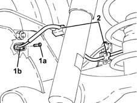
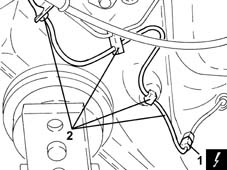

3340A34 rpm sensor (one) of one l/h or r/h rear wheel - r+r
- Path
- Procedures > 33 BRAKING SYSTEM > 3340 A(B.S. ANTI-LOCK BRAKING SYSTEM .) > 3340A abs check/adjustment devices > 3340A34 rpm sensor (one) of one l/h or r/h rear wheel - r+r
- Kind
- repair procedure (removal / refitting; the operation number is the code)
- Applies to
- engines: 1.2 8v, 1.2 16v, 1.4 16v; all production periods
- Interactive page
- https://sloeber94.github.io/elrnDB-lYpsln/en/#/2429191
Applies to: engines: 1.2 8v, 1.2 16v, 1.4 16v; all production periods
 Removing
Removing
 Refitting
Refitting.
Position the vehicle on the ramp.
Ensure that the ignition key is in OFF position, then disconnect the battery negative terminal (-).
 | Name | Connector |
|---|---|---|
- | Battery |
1. Undo the bolt (1a) and remove the rear wheel rpm sensor (1b).
2. Release the rear wheel rpm sensor electrical wiring from the attachments on the rear suspension.

Applies to: engines: 1.2 8v, 1.2 16v, 1.4 16v; all production periods
1. Disconnect the electrical connection for the rear wheel rpm sensor.
| Name | Connector |
|---|---|---|
1 | Left rear wheel sensor for ABS. |
| Name | Connector |
|---|---|---|
1 | Right rear wheel sensor for ABS. |
2. Remove the right front wheel rpm sensor after releasing the electrical wiring from the underbody fastenings.

Applies to: engines: 1.2 8v, 1.2 16v, 1.4 16v; all production periods
Refitting
RemovingConnect the electrical connection for the rear wheel rpm sensor.
Secure the rear wheel rpm sensor electrical wiring to the underbody fastenings.
Place the rear wheel rpm sensor back in its housing and fix it tightening the bolt to the recommended torque.
 | Fastening | Component | Ø | Value (daNm) |
|---|---|---|---|---|
- | Bolt | ABS REAR WHEEL RPM SENSOR | M6 | 0.6 ÷ 0.8 |
Secure the rear wheel rpm sensor electrical wiring to the rear suspension fastenings.
Connect the negative (-) battery terminal.
Remove the car from the ramps.
Topics linked from this page (3)
- A1B Battery ( BATTERY NEGATIVE )
- K75 Left rear wheel sensor for ABS.
- K76 Right rear wheel sensor for ABS.